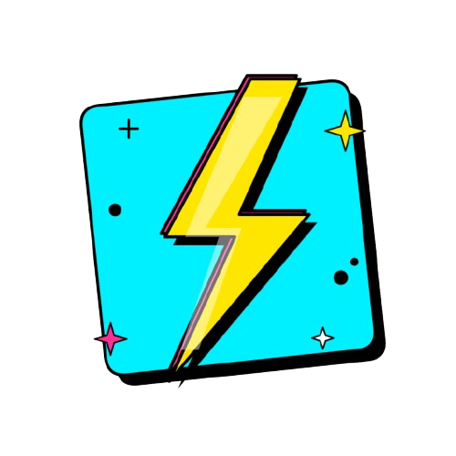

🔬 AI Vision
Upload foto soal atau rangkaian — AI langsung analisis untuk lu
Tap untuk pilih foto
atau drag & drop gambar di sini
⚡
ElektroBot AI ⚡

Soal di-generate AI secara random — beda tiap sesi!
Belajar elektronika dari nol — modul terstruktur dengan animasi & kuis.
Baca nilai resistor dari gelang warna secara instan
Konversi satuan teknik elektro dengan cepat dan akurat
Upload foto soal atau rangkaian — AI langsung analisis untuk lu
Perjalanan penemuan listrik & elektronika dari abad ke-17 hingga era digital
Pelajari gerbang logika digital secara interaktif!
Highlight menunjukkan posisi saklar saat ini
| A | B | Y |
|---|
Ketik ide proyek mikrokontroler kamu, AI akan merancang semuanya!
Pola rangkaian yang sudah teruji — klik kartu lalu langsung jalankan di simulator Wokwi, tanpa perlu generate AI.
Mikrokontroler, sensor, display, motor & lainnya yang disimulasikan Wokwi (dari supported-hardware.md).
Belajar memakai simulator langsung dari dokumentasi resminya.
Pantau sensor ESP32 & kontrol perangkat secara real-time — data dibaca langsung dari Firebase Realtime Database kamu.
iot-suhu-ku) → Create.asia-southeast1) → pilih mode test (aman untuk belajar) → Enable.https://NAMA-PROYEK-default-rtdb.asia-southeast1.firebasedatabase.app → isikan ke kolom URL Database di atas.DATABASE_URL dengan URL database (cukup URL saja — tanpa apiKey/secret). Template memakai HTTP REST bawaan ESP32 (HTTPClient), tanpa library Firebase tambahan. Setelah kode dijalankan (Wokwi/ESP32 asli), ESP32 otomatis menulis data ke path seperti /sensor/suhu, /sensor/kelembaban, /jarak/cm, /cahaya/nilai_adc, /gas/nilai_adc — dan dashboard ini membacanya.
/servo/sudut, LED RGB ke /rgb/merah, /rgb/hijau, /rgb/biru. ESP32 harus memantau path tersebut (template sudah menyediakannya).
Pedoman Keselamatan & Standarisasi Teknik Elektro (PUIL/IEC)
Standar wajib untuk perancangan, pemasangan, dan pemeriksaan instalasi listrik di Indonesia.
Masukkan daya beban — langsung dihitung arus, KHA minimum, ukuran kabel, dan rating MCB yang sesuai.
Kuat Hantar Arus kabel tembaga berisolasi PVC — 3 inti terbebani, dalam pipa/conduit, suhu 30°C.
| Luas (mm²) | KHA (A) | Beban Maks 220V (W) | Khas untuk |
|---|---|---|---|
| 1.5 | 15 | 3.300 | Lampu & penerangan grup kecil |
| 2.5 | 20 | 4.400 | Stop kontak umum & penerangan |
| 4 | 27 | 5.940 | Grup dapur, beban sedang |
| 6 | 34 | 7.480 | AC 1–2 PK, kompor listrik |
| 10 | 46 | 10.120 | Sub-panel, beban besar |
| 16 | 61 | 13.420 | Sirkuit utama PHB rumah |
| 25 | 80 | 17.600 | Feeder antar panel |
| 35 | 99 | 21.780 | Feeder utama rumah besar |
| 50 | 125 | 27.500 | Panel industri ringan |
| 70 | 160 | 35.200 | Feeder gedung |
| 95 | 195 | 42.900 | Feeder utama gedung |
| 120 | 225 | 49.500 | MDP / industri menengah |
Rating pengaman yang umum di pasaran — arus trip harus ≥ arus beban tapi ≤ KHA kabel.
| MCB (A) | Beban Maks 220V (W) | Penggunaan Khas |
|---|---|---|
| 2 | 440 | Penerangan 1 grup (daya PLN 450 VA) |
| 4 | 880 | Lampu + stop kontak kecil (PLN 900 VA) |
| 6 | 1.320 | Grup penerangan / rumah standar (PLN 1.300 VA) |
| 10 | 2.200 | Stop kontak umum (PLN 2.200 VA) |
| 16 | 3.520 | AC 1 PK, water heater (PLN 3.500 VA) |
| 20 | 4.400 | AC 1.5–2 PK, grup dapur (PLN 4.400 VA) |
| 25 | 5.500 | Kompor listrik / grup beban berat (PLN 5.500 VA) |
| 32 | 7.040 | Sub-panel / rumah besar (PLN 7.700 VA) |
| 40 | 8.800 | MCB utama 3-fase kecil / bengkel |
| 50 | 11.000 | Panel 3-fase menengah |
| 63 | 13.860 | MCB utama 3-fase (daya besar) |
| 80 | 17.600 | Panel industri / MDP |
| 100 | 22.000 | Feeder utama industri |
| 125 | 27.500 | MDP / switchboard besar |
Kode perlindungan peralatan dari benda padat (angka 1) dan benda cair (angka 2).
Standar Amerika (NEMA) yang sering setara dengan IP rating Eropa.
Batas suhu operasional maksimal untuk kumparan motor listrik.
| Kelas | Suhu Maks (°C) |
|---|---|
| Kelas A | 105°C |
| Kelas B | 130°C |
| Kelas F | 155°C (Umum di industri) |
| Kelas H | 180°C (Heavy Duty) |
Buka setiap panel untuk membaca penjelasan dan tautan sumber resmi.
Channel YouTube Indonesia — belajar elektronika, kelistrikan, motor listrik & energi terbarukan.
Informasi lengkap tentang aplikasi ini — dari README.